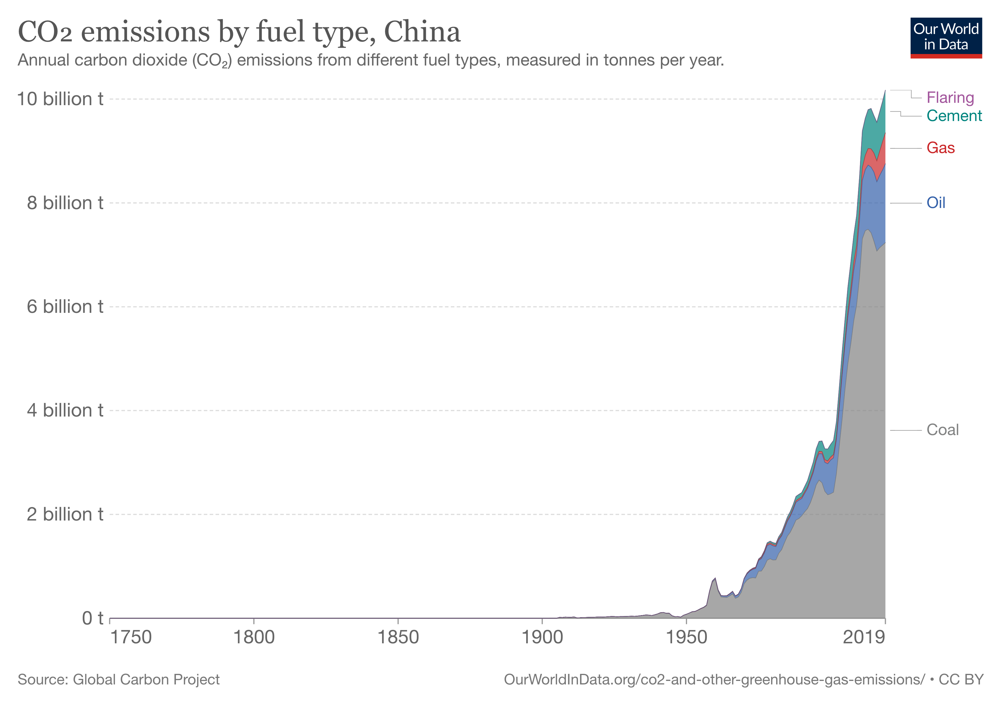

China
Biggest source of Emissions
The majority of China’s GHG emissions come from the power sector, notably from the production of electricity. The country’s energy demand is mostly met by the burning of coal. Between 2000 to 2018, roughly 75.5 % of China’s CO2 emissions came from coal.(ChinaPowerProject )

This figure is of 2016
Why
China heavily relies on coal to power its economy. The energy produced from coal is primarily consumed for industrial purposes such as manufacturing, agriculture, mining, and construction. Notably, the production of cement and steel under construction related activities produces a large amount of GHGs. China is the world’s largest supplier of steel and concrete and concrete accounted for 7.8% of the country’s emissions in 2018.(ChinaPowerProject)
Why coal is more widely used rather than other less polluting fossil fuels is because China sits on an extensive coal reserve while having limited domestic gas and oil resources. China’s reported coal reserves are 114.5 billion tonnes (energy watch group) with most reserves found in Shanxi and Inner Mongolia.(Diplomat)
What is being done about it:
China has said that carbon emissions should peak by 2030 and reach carbon neutrality by 2060. However, economic growth is a top priority, and in the first quarter of 2021, carbon emissions rose 9% higher compared with pre pandemic levels. The output of steel and cement driven by the burning of coal drove the increase of emissions(Reuters). In 2020, China built three times as much new coal power capacity as all other countries in the world combined. This growth is due to loosening of restrictions on construction permits and with provinces in China trying to stimulate their local economies with increased energy production from coal. Whether China would meet their goal of reaching carbon neutrality in the face of an ever growing fleet of coal power-plants, depends on the shortening of lifespans with the newly built plants as well as if the central government starts to rein in on coal production. (Global Energy Monitor.)